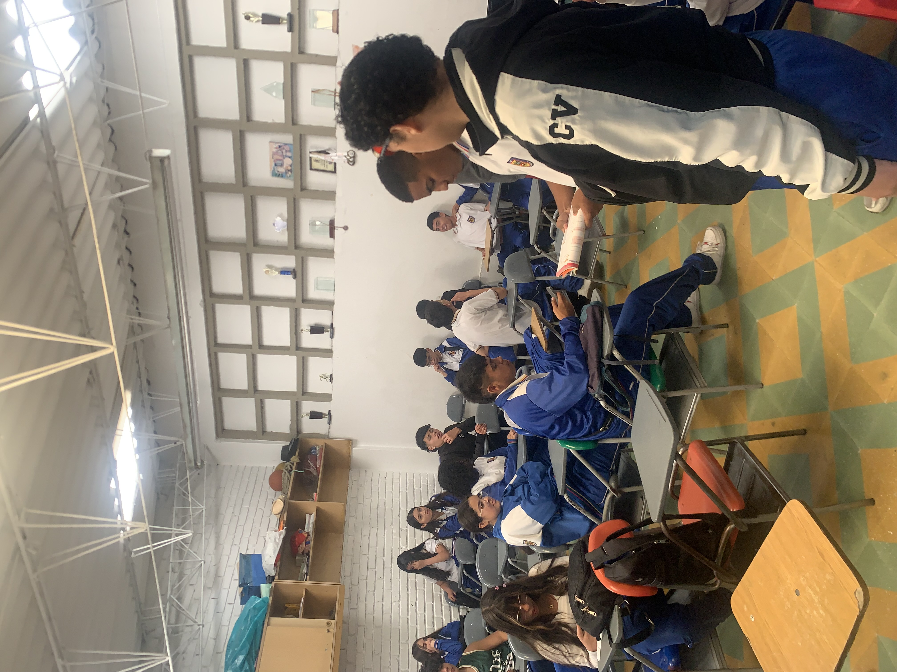
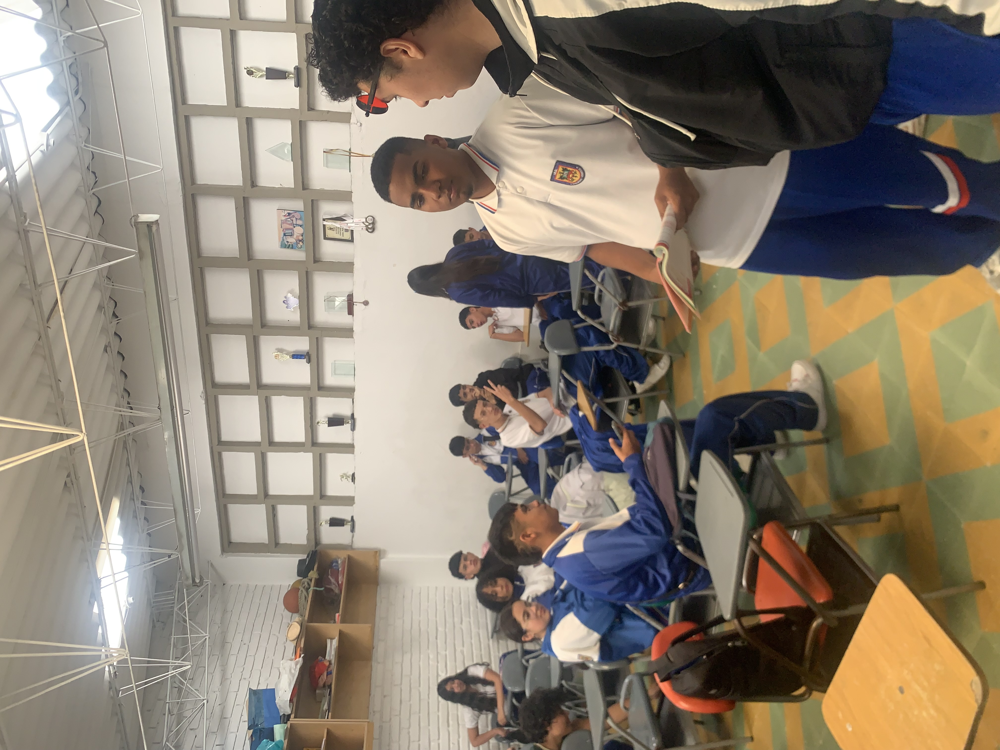
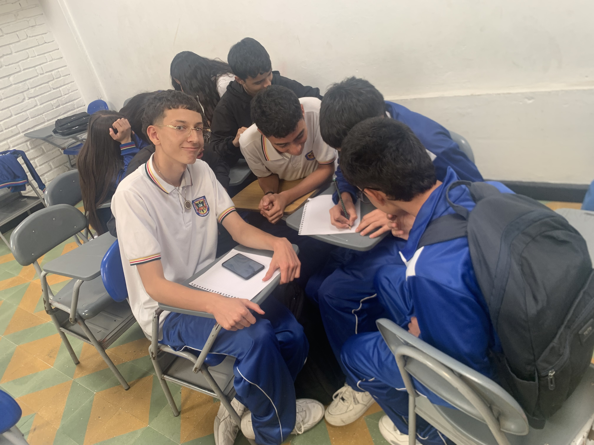
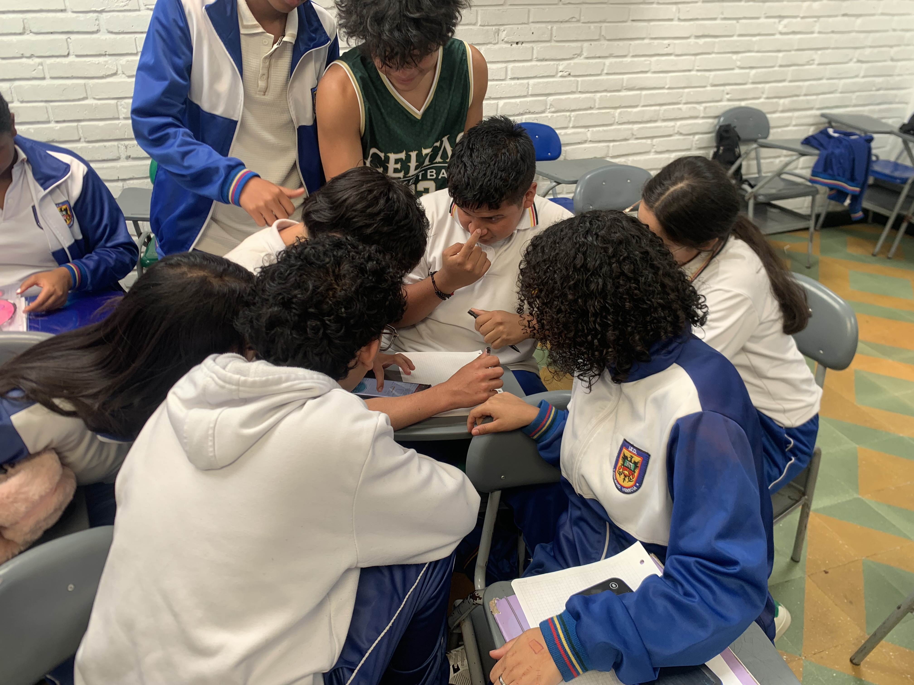
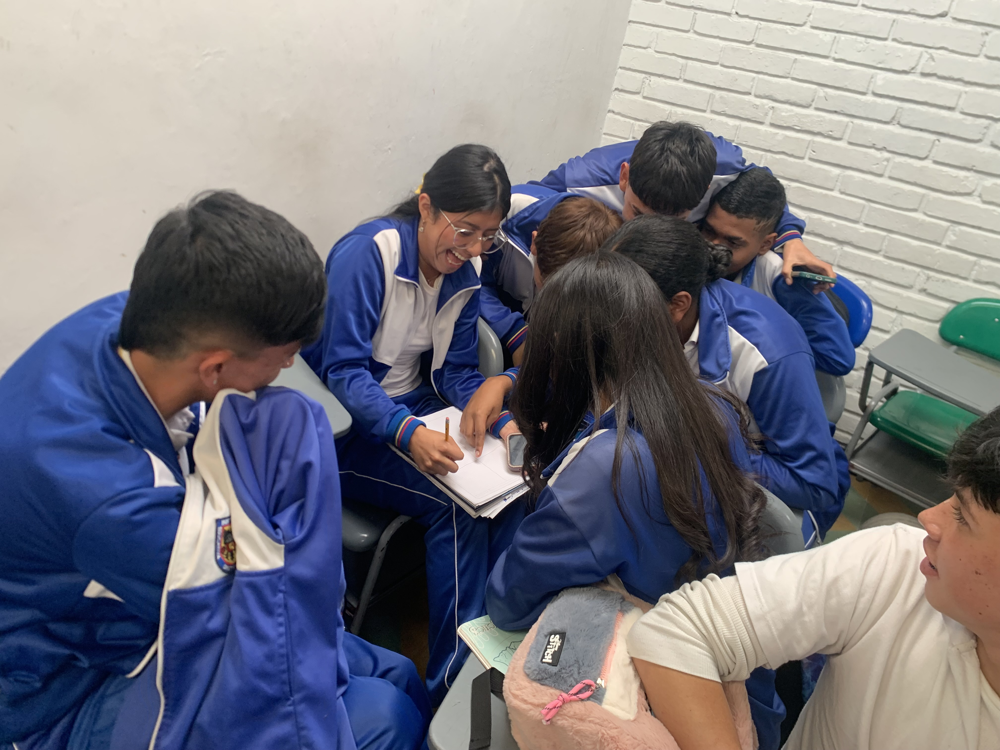
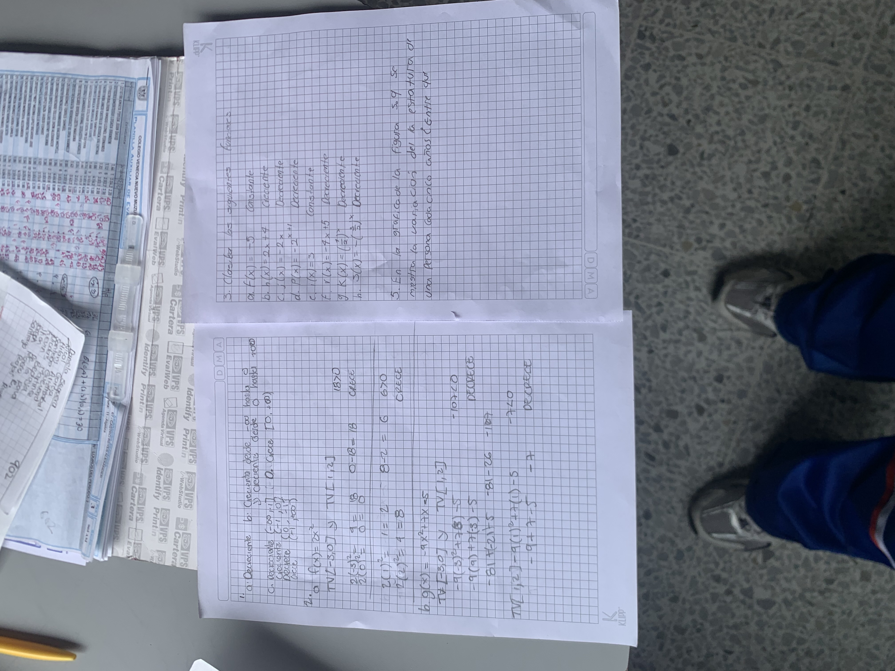
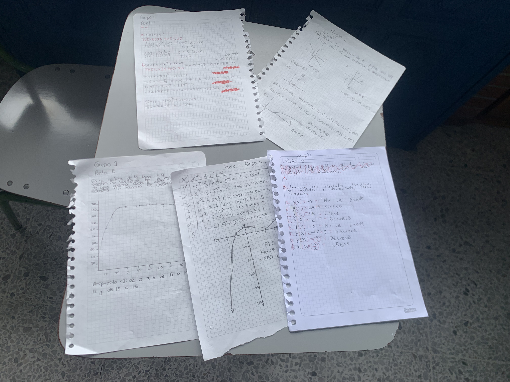

Aquí reunimos las evidencias del trabajo y del aprendizaje que inspira el proyecto: avances de diseño, pruebas de actividades, ideas de los estudiantes y resultados de las experiencias realizadas con el contenido digital. Estas evidencias nos permiten revisar qué funciona, detectar qué puede mejorar y comprobar que la herramienta sea clara, dinámica y útil para practicar diferentes materias.






